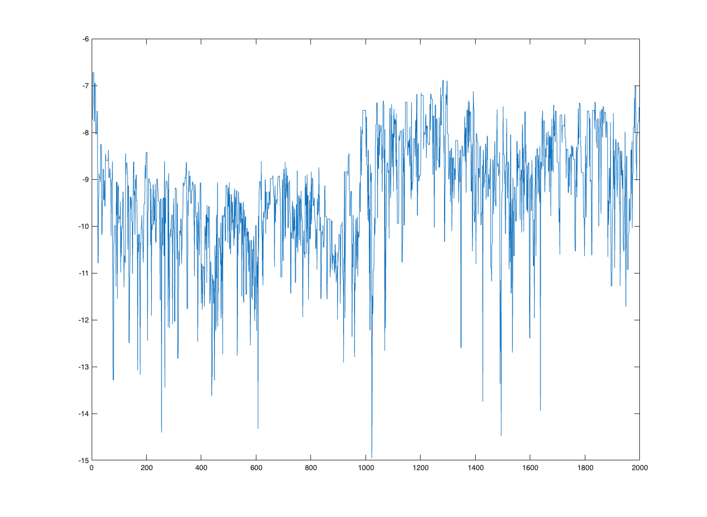
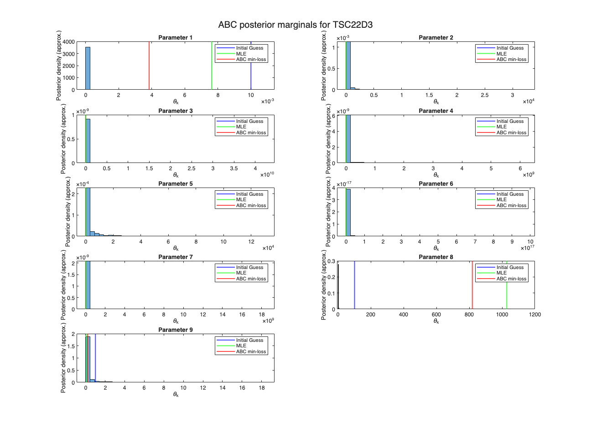

Contents
- SSIT/Examples/example_SI_ABC.m
- Approximate Bayesian Computation (ABC)
- Define scRNA-seq model:
- Set SSA options:
- Associate scRNA-seq data for gene TSC22D3:
- Set up a prior over parameters (logPriorLoss)
- Set ABC / MCMC options
- Run ABC search
- Inspect ABC results:
- Compare initial vs. final (ABC) parameter losses
- (Experimental data vs. data simulated by the SSA):
- Compare ABC posterior sample to MLE
SSIT/Examples/example_SI_ABC.m
%%%%%%%%%%%%%%%%%%%%%%%%%%%%%%%%%%%%%%%%%%%%%%%%%%%%%%%%%%%%%%%%%%%%%%%%%%%
Approximate Bayesian Computation (ABC)
in the SSIT using `runABCsearch'
This example: 1. Defines a model for scRNA-seq genes with SSA solution scheme. 2. Associates the template model with scRNA-seq data for gene TSC22D3. 3. Defines a prior over parameters. 4. Runs ABC via Metropolis–Hastings using 'cdf_one_norm' loss. 5. Visualizes the ABC results.
%%%%%%%%%%%%%%%%%%%%%%%%%%%%%%%%%%%%%%%%%%%%%%%%%%%%%%%%%%%%%%%%%%%%%%%%%%%
Define scRNA-seq model:
scRNAseq = SSIT;
scRNAseq.species = {'onGene';'rna'};
scRNAseq.initialCondition = [0;0];
scRNAseq.propensityFunctions = ...
{'(kon_0+kon_1*Iupstream)*(2-onGene)';...
'koff_0/(1+akoff*Iupstream)*onGene';...
'kr_0*(2-onGene)+kr_1*onGene';'gr*rna'};
scRNAseq.stoichiometry = [1,-1,0,0;0,0,1,-1];
scRNAseq.inputExpressions = {'Iupstream',...
'exp(-r1*t*(t>=0))*(1-exp(-r2*t*(t>=0)))'};
scRNAseq.parameters = ({'r1',0.01; 'r2',0.1; 'kon_0',0.01;...
'kon_1',0.01; 'koff_0',20; 'akoff',0.2;...
'kr_0',1; 'kr_1',100; 'gr',1});
Set SSA options:
%Set solution scheme to SSA: scRNAseq.solutionScheme = 'SSA'; % Set number of simulations performed per experiment (small # for demo): scRNAseq.ssaOptions.nSimsPerExpt=100; % Equilibrate before starting (burn-in): scRNAseq.tSpan = [-100,scRNAseq.tSpan]; % Run iterations in parallel with multiple cores: scRNAseq.ssaOptions.useParallel = true;
Associate scRNA-seq data for gene TSC22D3:
scRNAseq = scRNAseq.loadData('data/Raw_DEX_UpRegulatedGenes_ForSSIT.csv',... {'rna','TSC22D3'}); % Choose which parameters to fit: fitpars = 1:9; scRNAseq.fittingOptions.modelVarsToFit = [fitpars];
Set up a prior over parameters (logPriorLoss)
logPriorLoss should return a loss (positive penalty); smaller is better. A convenient choice is a quadratic penalty in log10-parameter space, corresponding to a log-normal prior.
theta0 = cell2mat(scRNAseq.parameters([fitpars],2)); log10_mu = log10(theta0(:)); log10_sigma = 2 * ones(size(log10_mu)); % std dev in log10-space % Define prior "loss" (default, @(x)allFitOptions.obj(exp(x))): logPriorLoss = [];
Set ABC / MCMC options
runABCsearch passes 'fitOptions' to maximizeLikelihood with the 'MetropolisHastings' algorithm. Tune these depending on your problem size.
fitOptions = struct(); fitOptions.numberOfSamples = 2000; % Total MH iterations fitOptions.burnIn = 200; % Discard burn-in samples fitOptions.thin = 2; % Keep every nth sample proposalWidthScale = 0.5; % Proposal scale % Proposal distribution: fitOptions.proposalDistribution = @(x)x+proposalWidthScale*randn(size(x)); % Log prior: fitOptions.logPrior = @(z) -sum((z-log10_mu).^2./(2*log10_sigma.^2)); % Initial parameter guess (optional, default: current Model.parameters): %parGuess = []; % In this case, parGuess = []; is the same as the default: parGuess = cell2mat(scRNAseq.parameters((fitpars),2)); % Choose loss function for ABC (default: 'cdf_one_norm'): lossFunction = 'cdf_one_norm'; % Enforce independence by downsampling SSA trajectories: enforceIndependence = true;
Run ABC search
This will: * repeatedly simulate SSA trajectories, * compute a CDF-based loss against the data, * add the prior penalty, and * perform MH sampling to approximate the posterior.
Outputs: pars - "best" (minimum-loss) parameter set found minimumLossFunction - value of the loss at that point Results - MH/ABC diagnostics and chains ModelABC - model updated with 'pars'
% Compile and store the given reaction propensities: scRNAseq = scRNAseq.formPropensitiesGeneral('scRNAseq'); [parsABC, minimumLoss, ResultsABC, scRNAseq] = ... scRNAseq.runABCsearch(parGuess, lossFunction, logPriorLoss,... fitOptions, enforceIndependence); fprintf('ABC completed.\n'); fprintf('Minimum loss value: %g\n', minimumLoss); disp('Best-fit parameters (ABC):'); disp(parsABC(:).');
ABC completed. Minimum loss value: 6.18358 Best-fit parameters (ABC): Columns 1 through 6 3.8425e-03 1.2389e+00 2.0725e-04 1.4039e-02 4.3422e+01 2.0141e-01 Columns 7 through 9 4.4773e-01 8.1834e+02 2.1622e-01

Inspect ABC results:
The 'ResultsABC' struct is returned by maximizeLikelihood with the 'MetropolisHastings' algorithm. ResultsABC.mhSamples - MCMC chain of parameter samples ResultsABC.mhValue - corresponding loss values ResultsABC.mhAcceptance - MH acceptance fraction Below we show a simple marginal histogram for each fitted parameter.
load('seqModels/Model_TSC22D3.mat') histogramTitle = 'ABC posterior marginals for TSC22D3'; if isfield(ResultsABC, 'mhSamples') if ~isfield(fitOptions, 'logForm') || fitOptions.logForm parChain = exp(ResultsABC.mhSamples); % Default MH samples are stored in log-parameter space. else parChain = ResultsABC.mhSamples; end nPars = size(parChain, 2); mlePars = cell2mat(Model_TSC22D3.parameters(fitpars,2)); figure; for k = 1:nPars subplot(ceil(nPars/2), 2, k); histogram(parChain(:,k), 40, 'Normalization', 'pdf', ... 'HandleVisibility', 'off'); hold on; hInit = xline(parGuess(k), 'b', 'LineWidth', 1.5, ... 'DisplayName', 'Initial Guess'); hABC = xline(parsABC(k), 'r', 'LineWidth', 1.5, ... 'DisplayName', 'ABC min-loss'); hMLE = xline(mlePars(k), 'g', 'LineWidth', 1.5, ... 'DisplayName', 'MLE'); title(sprintf('Parameter %d', k)); xlabel('\theta_k'); ylabel('Posterior density (approx.)'); legend([hInit hMLE hABC], 'Location', 'best'); end sgtitle(histogramTitle); else warning('ResultsABC.mhSamples not found.'); end

Compare initial vs. final (ABC) parameter losses
(Experimental data vs. data simulated by the SSA):
Minimum loss from ABC run:
minLoss = minimumLoss; nTimes = sum(scRNAseq.fittingOptions.timesToFit); % Set the number of species being fitting (in this case, only mRNA): nSpecies = 1; % Replicate groups / dose groups etc., if applicable: nConds = 1; avgLossPerCDF = minLoss / (nTimes * nSpecies * nConds); fprintf('Average CDF L1 discrepancy per time/species: %.4f\n',avgLossPerCDF); L_init = scRNAseq.computeLossFunctionSSA(lossFunction,... theta0, enforceIndependence); L_min = minimumLoss; fprintf('Initial loss: %.3f, Final (min) loss: %.3f\n', L_init, L_min); fprintf('Relative improvement: %.1f%%\n', 100 * (L_init - L_min)/L_init);
Average CDF L1 discrepancy per time/species: 0.0198 Initial loss: 10.289, Final (min) loss: 6.184 Relative improvement: 39.9%
Compare ABC posterior sample to MLE
TODO: Overlay parameter values and compute predictive distributions.
theta_TSC22D3 = cell2mat(Model_TSC22D3.parameters(1:9,2)); L_MLE = scRNAseq.computeLossFunctionSSA(lossFunction,... theta_TSC22D3, enforceIndependence); L_min = minimumLoss; fprintf('MLE loss: %.3f, Final (min) ABC loss: %.3f\n', L_MLE, L_min); fprintf('Relative improvement: %.1f%%\n', 100 * (L_MLE - L_min)/L_MLE);
MLE loss: 204.141, Final (min) ABC loss: 6.184 Relative improvement: 97.0%